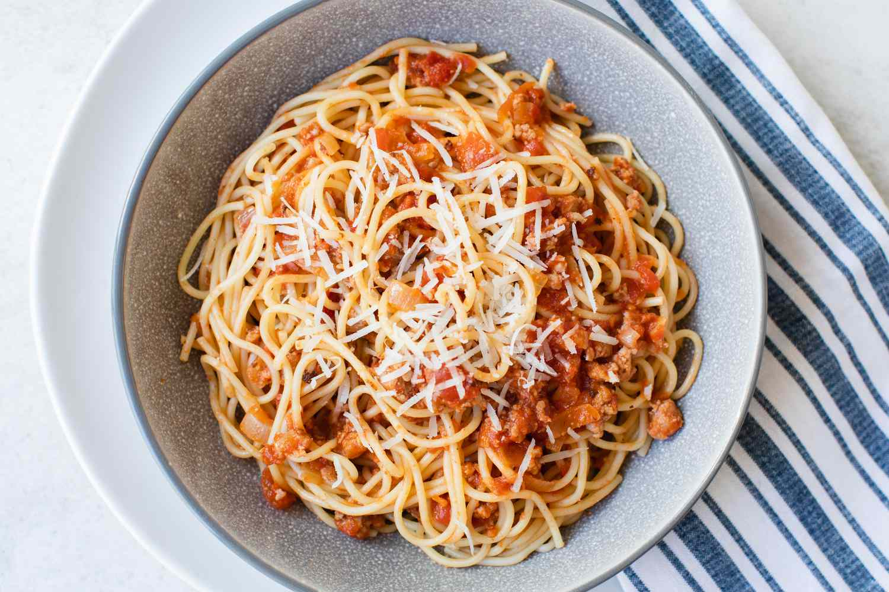

My Favorite Recipe
Spaghetti with italian sausage sauce

Ingredients
- 1 tablespoon extra virgin olive oil
- 1 yellow onion, finely chopped (about 1 1/2 to 2 cups)
- 2 cloves garlic, minced (about 2 teaspoons)
- 6 ounces (170g) Italian sweet sausage (1 link 7 to 8 inches long)
- 6 ounces (170g) Italian hot and spicy sausage (1 link 7 to 8 inches long)
- 1 (28-ounce/794g) can crushed tomatoes (or purée a can of whole peeled tomatoes)
- 1 pound (450g) spaghetti
- Kosher Salt
- Freshly grated Parmesan cheese
Instructions
- Sauté the onions and garlic: Heat a tablespoon of extra virgin olive oil in a large skillet on medium or medium heat. Add the chopped onion and cook until translucent, about 5 minutes. Add the minced garlic and cook 1 minute more.
- Put the pasta water on to boil: While the onions are cooking, put a large pot of salted water on to boil for the pasta (4 quarts water with 2 tablespoons salt).
- Brown the sausage: Remove the cooked onion and garlic from the pan and set aside. Remove the sausage meat from the casings (if your sausage is in links) and add to the pan, breaking up the meat with your fingers as you add it to the pan. Cook on medium heat until just lightly browned.
- Add the tomatoes, onions, and garlic: Add crushed or puréed canned tomatoes with their juices to the skillet with the sausage meat. Add the cooked onions and garlic. Heat to a bare simmer.
- Boil the spaghetti: Once the pasta water has come to a rolling boil, add the spaghetti. Allow the water to return to a rolling boil. Cook, uncovered, with a vigorous boil, for as long as the directions on the pasta package say, usually about 10 to 12 minutes. When pasta is al dente (cooked but still a little firm), remove the pot from the heat. Drain the pasta and place it in a serving bowl.
Notes
Serve immediately. Toss with the sauce and garnish with grated Parmesan cheese.